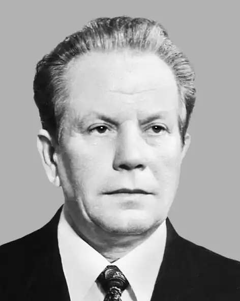

Микола Магера
Магера Микола Никанорович — український письменник.
Народився 1 вересня 1922р. в с. Могилівка, тепер у складі м. Дунаївці Хмельницької області. Учасник Великої Вітчизняної війни. Закінчив 1951р. Київський університет. Учителював, працював у системі народної освіти. Пише здебільшого для дітей — вірші, казки, оповідання, повісті. Автор збірок "Мати" (1971), "Журавка" (197З), "Юрасик" (1984), "Друзі" (1987), "Хлопчаки", "Я хочу жити" (обидві — 1990); повістей "Надійка" (1975), "Там, біля Дивень-гори" (1977), повісті "Кам'янецькими стежками" (1989) — про перебування Т. Шевченка у Кам'янці-Подільському. Окремі твори М. Магери перекладено російською мовою.